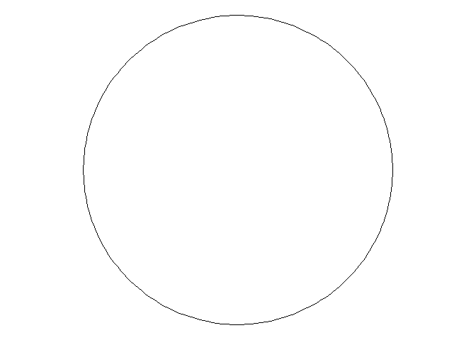
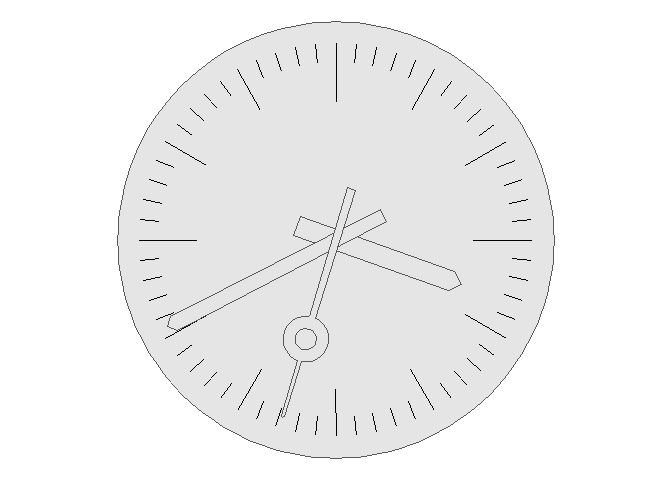

Chapter 7 Sharing your book
7.1 Rose
https://en.wikipedia.org/wiki/Rose_(mathematics)
## Linking to GEOS 3.9.1, GDAL 3.4.3, PROJ 7.2.1; sf_use_s2() is TRUE## ── Attaching packages
## ───────────────────────────────────────
## tidyverse 1.3.2 ──## ✔ ggplot2 3.3.6 ✔ purrr 0.3.4
## ✔ tibble 3.1.8 ✔ dplyr 1.0.9
## ✔ tidyr 1.2.0 ✔ stringr 1.4.0
## ✔ readr 2.1.2 ✔ forcats 0.5.1
## ── Conflicts ────────────────────────────────────────── tidyverse_conflicts() ──
## ✖ dplyr::filter() masks stats::filter()
## ✖ dplyr::lag() masks stats::lag()library(gganimate)
st_rose = function(p, q, n){
tmp <- tibble(theta = seq(0, n*pi, length.out = 200)) %>%
mutate(r = 1 * cos(p/q * theta)) %>%
mutate(x = r * cos(theta)) %>%
mutate(y = r * sin(theta))
linestring <- tmp %>% select(x, y) %>% #bind_rows(tmp %>% select(x, y) %>% slice(1)) %>%
as.matrix() %>% list() %>% st_multilinestring() %>% st_sfc()
linestring}
p = c(1:3)
q = c(1:3)
rose <- expand.grid(p = p, q = q) %>% mutate(n = if_else( (p*q) %% 2 == 0, 2*q, 1*q)) %>% mutate(facet = row_number()) %>%
mutate(geometry = list(st_point())) %>%
st_as_sf(sf_column_name = "geometry") %>% rowwise() %>%
mutate(geometry = st_rose(p, q, n))
anim <-
rose %>% ggplot() +
geom_sf() +
transition_time(facet) +
scale_colour_identity() +
view_follow() +
# geom_sf_text(aes(label = paste("p:", p, "q:", q)), colour = "red") +
theme_void() #+ ggtitle("r = 1 * cos(p/q * theta)")
animate(anim, renderer = gifski_renderer("Rose.gif"), fps = 10, duration = 10) #60
7.2 Publishing
HTML books can be published online, see: https://bookdown.org/yihui/bookdown/publishing.html
library(rsvg)
library(grid)
library(inkscaper)
url <- 'Station_Clock_Paths.svg'
url %>%
rsvg() %>%
grid.raster()
logo <- inx_extension(input = url, inkscape_extension_name = "dxf12_outlines.py", ext =".dxf") %>%
st_read()
logo %>% ggplot() +
geom_sf()
clock_face <- logo %>% slice(1:129) %>% st_union() %>% st_polygonize() %>%
first() %>% first()
centre <- st_centroid(clock_face) %>% st_coordinates() %>% as.vector()
clock_face <- clock_face - centre
clock_face %>% ggplot() +
geom_sf()
clock_scale <- logo %>% slice(130:192) %>% st_union()
clock_scale <- clock_scale - centre
clock_scale %>% ggplot() +
geom_sf()
hour_hand <- logo %>% slice(193:197) %>% st_union() %>% st_polygonize() %>%
first() %>% first()
hour_hand <- hour_hand - centre
hour_hand %>% ggplot() +
geom_sf()
minute_hand <- logo %>% slice(198:202) %>% st_union() %>% st_polygonize() %>%
first() %>% first()
minute_hand <- minute_hand - centre
minute_hand %>% ggplot() +
geom_sf()
second_hand <- logo %>% slice(203:277) %>% st_union() %>% st_polygonize() %>%
first() %>% first()
second_hand <- second_hand - centre
second_hand %>% ggplot() +
geom_sf()
rot = function(a) matrix(c(cos(2*pi*a), sin(2*pi*a), -sin(2*pi*a), cos(2*pi*a)), 2, 2)
collection = st_sfc() %>% st_sf()
for (i in c(1:60)) {
second_hand <- second_hand * rot(1/60)
tmp <- clock_face %>% st_sfc() %>% st_sf() %>% mutate(colour = 'black') %>%
bind_rows(clock_scale %>% st_sfc() %>% st_sf() %>% mutate(colour = 'black')) %>%
bind_rows(hour_hand %>% st_sfc() %>% st_sf() %>% mutate(colour = 'black')) %>%
bind_rows(minute_hand %>% st_sfc() %>% st_sf() %>% mutate(colour = 'black')) %>%
bind_rows(second_hand %>% st_sfc() %>% st_sf() %>% mutate(colour = 'black')) %>%
mutate(facet = i)
collection <- collection %>% bind_rows(tmp)
}
library(gganimate)
anim <- collection %>% ggplot() +
geom_sf() +
# aes(fill = colour) +
transition_time(facet) +
# scale_color_identity() +
# scale_fill_identity() +
theme_void()
#anim
animate(anim, renderer = gifski_renderer("Station_Clock.gif"), fps = 1, duration = 60)
7.3 404 pages
By default, users will be directed to a 404 page if they try to access a webpage that cannot be found. If you’d like to customize your 404 page instead of using the default, you may add either a _404.Rmd or _404.md file to your project root and use code and/or Markdown syntax.
7.4 Metadata for sharing
Bookdown HTML books will provide HTML metadata for social sharing on platforms like Twitter, Facebook, and LinkedIn, using information you provide in the index.Rmd YAML. To setup, set the url for your book and the path to your cover-image file. Your book’s title and description are also used.
This gitbook uses the same social sharing data across all chapters in your book- all links shared will look the same.
Specify your book’s source repository on GitHub using the edit key under the configuration options in the _output.yml file, which allows users to suggest an edit by linking to a chapter’s source file.
Read more about the features of this output format here:
https://pkgs.rstudio.com/bookdown/reference/gitbook.html
Or use: